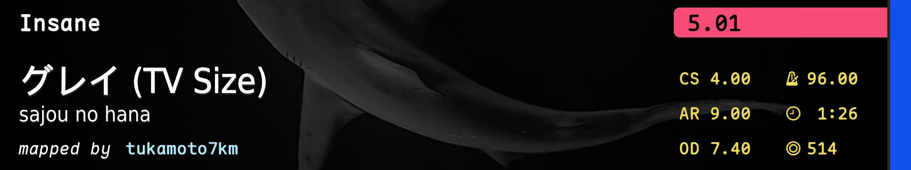
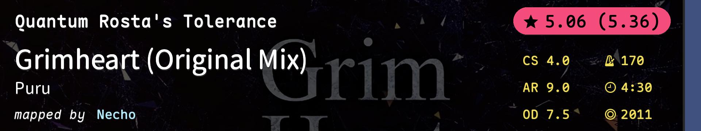
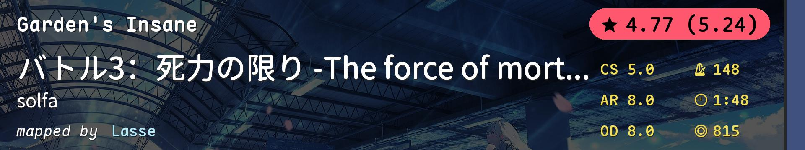
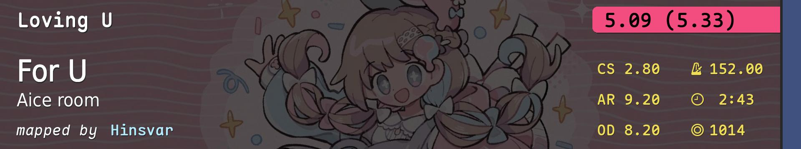

| # | BID | Beatmap Info | CS | HP | OD | AR | Hit Length | BPM | Stars | Notes |
|---|---|---|---|---|---|---|---|---|---|---|
| 1 | 3521055 | 4.20 | 5.5 | 9.20 | 9.20 | 3:44 (1229x) | 175.0 | 5.52 | 跳 | |
| 2 | 3122865 | 4.00 | 4.0 | 8.00 | 9.30 | 5:34 (3273x) | 190.0 | 5.32 | 串 | |
| 3 | 4502236 | 5.00 | 4.5 | 9.00 | 8.50 | 1:55 (701x) | 133.0 | 5.1 | alt/间距串 | |
| 4 | 2724531 |  | 4.00 | 4.2 | 7.40 | 9.00 | 1:26 (514x) | 96.0 | 5.01 | tech |
| 5 | 4379484 | 3.50 | 5.0 | 8.00 | 9.00 | 4:17 (2257x) | 212.0 | 5.21 | 高速串 | |
| 6 | 4570327 | 4.00 | 4.0 | 8.00 | 8.80 | 3:42 (1539x) | 172.0 | 5.18 | 节奏/读谱/手控 | |
| 7 | 4034663 | 4.00 | 5.0 | 9.00 | 9.40 | 4:01 (1463x) | 172.0 | 5.44 | awkward aim | |
| 8 | 3158362 | 4.00 | 4.0 | 8.00 | 8.00 | 2:00 (865x) | 180.0 | 5.07 | AR8 堆叠 gimmick | |
| 9 | 3169833 | 3.80 | 4.5 | 8.00 | 9.00 | 3:27 (1584x) | 300.0 | 5.03 | 爵士 | |
| 10 | 4348879 | 6.50 | 8.4 | 9.80 | 10.00 | 1:27 (524x) | 135.0 | 5.46 | 综合 | |
| 11 | 3211629 | 7.15 | 7.0 | 10.00 | 10.00 | 1:29 (415x) | 70.0 | 5.03 | 小圈 | |
| 12 | 3197402 | 5.20 | 7.0 | 10.00 | 10.00 | 3:09 (1052x) | 112.0 | 5.16 | 拼acc的时候到了 | |
| 13 | 4521732 | 3.50 | 5.0 | 8.44 | 9.67 | 2:19 (909x) | 270.0 | 5.26 | 谁说DT好刷pp？ | |
| 14 | 3818012 | 3.50 | 4.0 | 8.11 | 9.67 | 1:20 (712x) | 330.0 | 5.5 | 高速切 | |
| 15 | 4091821 | 3.00 | 3.0 | 8.78 | 10.00 | 1:30 (841x) | 232.5 | 5.54 | AR10手控 | |
| 16 | 4420170 | 4.00 | 5.0 | 8.44 | 7.67 | 1:56 (920x) | 300.0 | 5.42 | 低AR | |
| 17 | 2140790 |  | 4.00 | 5.0 | 7.50 | 9.00 | 4:30 (2011x) | 170.0 | 5.06(5.36) | 算是常规 |
| 18 | 4261144 |  | 5.00 | 5.0 | 8.00 | 8.00 | 1:48 (815x) | 148.0 | 4.77(5.24) | antimod |
| 19 | 4220385 |  | 2.80 | 6.0 | 8.20 | 9.20 | 2:43 (1014x) | 152.0 | 5.09(5.33) | 大圈 |
| 20 | 3774013 | 4.00 | 5.2 | 8.80 | 9.40 | 9:44 (3574x) | 177.0 | 5.9 | 耐力 |